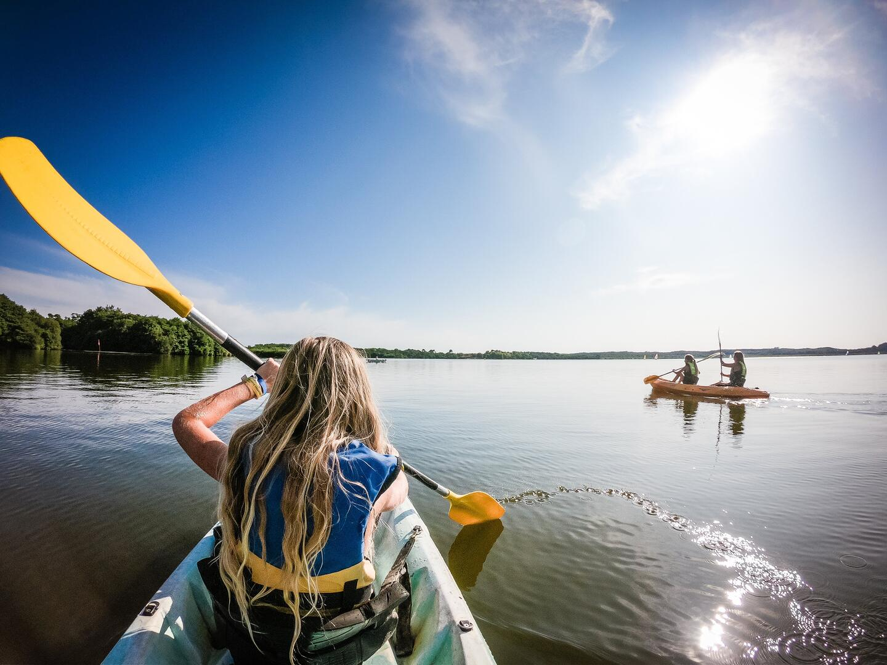

PORT EN MINIATURE (SOUSTONS)
En Soustons, aunque cerca de la playa y a tiro de piedra de Vieux-Bocau, está el lago de Pinsolles. Aqui puedes conducir nuestras réplicas de barcos eléctricos
con la familia. Es una manera de pasar un momento agradable en familia, mientras se aprecia la naturaleza salvaje del lago marino. Hay una zona de picnic,
se puede pasear a pie o en bicicleta alrededor del lago. Cerca también hay un lago con salida al mar con una isla en medio.
VER MÁS

HOSSEGOR, EL PARAISO DEL SURFISTA
Hossegor se ubica en la zona de Las Landas. Es considerado uno de los mejores destinos de surf en toda Europa con rompientes consistentes de arena.
Durante muchos años Hossegor ha sido sede del circuito mundial de la WSL, siendo un escenario perfecto para los mejores surfistas del mundo.
Hoy en día reúne a surfistas de todo el planeta que viajan hasta Francia para surfear buenas olas y disfrutar de muy buena comida. Puedes apuntarse a hacer
cursillos de iniciación en las múltiples escuelas surferas.
VER MÁS

La playa de Vielle, en la orilla norte del lago, ofrece una zona verde y arbolada en la que resulta agradable pasar el día.
El centro de deportes acuáticos "Au fil de l'eau" ofrece un paseo en canoa, que le llaman: 3 Universos, 3 descubrimientos: que
pasas por el lago, el pantano y río.